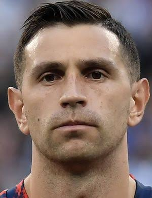
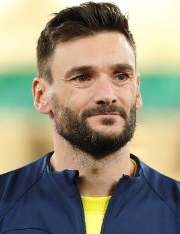

Executive Summary & Match Context
1.1 Tactical Context
The 2022 FIFA World Cup Final between Argentina and France at Lusail Stadium was a tactical chess match that oscillated between extremes: a suffocating Argentine first-half dominance, a French resurgence built on direct transition, and an extra-time period defined by chaos, fatigue, and individual brilliance. Argentina built a 2-0 lead inside 36 minutes through a sustained pressing structure that starved France of any controlled possession — Didier Deschamps' side failed to register a single shot for the opening 67 minutes, a remarkable statistic for a forward line featuring Kylian Mbappé, Antoine Griezmann, and Olivier Giroud. The introduction of direct runners like Kingsley Coman, Randal Kolo Muani and Marcus Thuram in the second half inverted the dynamic, exposing Argentina's defensive line and producing three French goals from open sequences that each featured a completely unobstructed shot lane.
The match therefore functions as an ideal case study for Freeze Frame analysis: it contrasts two distinct attacking philosophies (sustained central circulation vs. direct transition) and two opposing defensive failures (France's over-committed low block vs. Argentina's late-game structural collapse). The eight shots selected for deep analysis in this report were chosen because they collectively represent every consequential turning point in the match — each goal, each goal-saving intervention, and each blocked opportunity that influenced the final outcome. Together, they reveal the gap between what traditional Expected Goals (xG) models measure and what actually happened on the pitch, demonstrating why context-aware spatial analysis must complement raw probabilistic outputs.
1.2 Methodology — Freeze Frame Mechanics
StatsBomb Freeze Frame data captures the static spatial configuration of all players at the precise moment each shot was taken. For every shot event, the freeze frame returns one row per player on the pitch, containing that player's (x, y) coordinate, team affiliation, position name, and player identity. This is materially richer than the shot event alone, which only records the shooter's location, body part, technique, and outcome. By joining the freeze frame to the event stream, we recover the full defensive geometry surrounding each shot.
Feature Extraction
Extract Distance to Goalkeeper and Is in Shot Triangle Features.
2.1 Goalkeeper-to-Shooter Distance — Mathematical Formulation
The foundational derived metric in this report is the Euclidean distance between the shooter and the opposing goalkeeper at the moment the shot was taken. Treating the pitch as a two-dimensional Cartesian plane with the StatsBomb coordinate convention, this distance is computed directly from the shooter's coordinates (x₁, y₁) and the goalkeeper's coordinates (x₂, y₂):
Here, d is expressed in the same pitch units as the input coordinates (one unit ≈ 1 meter, given that a standard pitch maps to 120 × 80 units). The metric is directionally interpretable: a low goalkeeper_distance signals that the goalkeeper had already closed the angle and was effectively on top of the shooter, whereas a high distance indicates the keeper was anchored to his goal line, leaving a larger shooting target but also a longer reaction window.
2.2 Shot-Lane & Defender Cone Analysis
To quantify defensive obstruction, we mathematically model the Shot Cone as a two-dimensional triangular region ΔV1V2V3 extending from the shooter’s position V1 = (x1, y1) to the two standard StatsBomb goalpost positions: V2 = (120, 36.0) and V3 = (120, 44.0). Any opposing outfield defender positioned at Pi = (xi, yi) within this spatial boundary at the frame of the shot is classified as an active blocker in the direct line of fire.
The scalar weights λ1, λ2, λ3 are computed using deterministic vector cross-products (determinants of the sub-triangles). The metric aggregates every opposing player into a discrete density sum:
Here, I(·) represents an indicator function returning 1 if the defender lies strictly inside or on the boundaries of the shooting triangle, and 0 otherwise.
defenders_in_cone == 0) establish a direct, high-velocity target lane toward the goalmouth, leaving the goalkeeper as the single line of defense. Conversely, when defenders_in_cone ≥ 1, the geometric corridor is constricted. This forces the shooter to alter the ball's natural trajectory—requiring additional elevation or a pronounced curl—or risk an immediate block at point-blank range. This metric captures the physical density of the defensive block far more accurately than raw spatial proximity metrics.
2.3 Structured Shot Data Table
The table below consolidates the eight freeze-frame-analyzed shots into a single analyst-ready artifact. Each row corresponds to one shot, identified by a stable shot ID (S1–S8) used consistently throughout the remainder of this report.
| ID | Team | Min | Phase | Shooter | Shooter (x₁, y₁) | Goalkeeper (x₂, y₂) | GK Distance | xG | Outcome |
|---|---|---|---|---|---|---|---|---|---|
| S1 | FRA | 80' | 2H | Kylian Mbappé | (104.8, 30.1) | (117.7, 37.9) | 15.07 | 0.102 | Goal |
| S2 | FRA | 93' | 2H+ET | Adrien Rabiot | (108.9, 28.5) | (118.3, 36.4) | 12.28 | 0.093 | Saved |
| S3 | FRA | 122' | ET2 | Randal Kolo Muani | (103.7, 45.1) | (109.7, 43.5) | 6.21 | 0.278 | Saved |
| S4 | ARG | 96' | 2H+ET | Lionel Messi | (96.2, 40.9) | (117.6, 39.9) | 21.42 | 0.043 | Saved |
| S5 | ARG | 104' | ET1 | Lautaro Martínez | (108.8, 45.3) | (116.7, 42.2) | 8.49 | 0.233 | Blocked |
| S6 | ARG | 105' | ET1 | Lautaro Martínez | (105.1, 33.5) | (109.0, 35.1) | 4.22 | 0.140 | Off T |
| S7 | ARG | 107' | ET2 | Lionel Messi | (116.6, 43.0) | (118.3, 43.7) | 1.84 | 0.488 | Goal |
| S8 | ARG | 122' | ET2 | Lautaro Martínez | (110.8, 41.6) | (118.1, 42.4) | 7.34 | 0.107 | Off T |
Three observations are immediately evident from the table. First, the highest-xG shot in the match — Messi's 107' rebound goal at xG = 0.488 — was also the shot with the smallest goalkeeper distance (1.84 meters), reflecting a near-open-goal scenario. Second, Lautaro Martínez's three extra-time shots (S5, S6, S8) all featured goalkeepers less than 9 meters away, indicating the keeper was actively engaging him rather than passively positioned. Third, Messi's 96' long-range strike (S4) had the largest goalkeeper distance (21.42 meters) — a classic line-set scenario where the keeper prioritized reaction time over angle-narrowing.
Shot Analysis
A geometric dissection of the defensive block, shot lanes, and shooter pressure windows across the eight freeze-frame-analyzed shots.
3.1 The Lautaro Effect — Breaking the French Low Block
During the first 90 minutes of the final, Argentina's inside-the-box shooting opportunities were heavily congested. Aside from Ángel Di María's counter-attacking goal, almost every shot taken by Argentina inside the French penalty area faced immediate opposition, with at least one defender successfully positioning themselves directly in the Shot Lane. The introduction of Lautaro Martínez in the 102nd minute fundamentally altered this dynamic. Across his four shooting opportunities (S5 at 104', S6 at 105', an indirect involvement in Messi's 107' goal S7, and S8 at 122'), he managed to isolate himself from defensive cover — meaning no defender was blocking his direct line of sight to the goal at the moment of the shot. The single exception was a last-second desperation tackle by Dayot Upamecano on S5.
Decomposing the Tactic: Three Mechanisms
Three distinct spatial mechanisms underpinned Martínez's disruptive effect. First, he operated on the shoulders of the last defenders rather than engaging them frontally — unlike Julián Álvarez, whose direct central runs were visible to France's center-backs (Varane and Upamecano) and therefore easy to track. By hiding in defenders' blind spots, Martínez forced a fatigued French backline to constantly drop deeper and turn their hips, generating separation in the process. Second, he acted as a physically imposing modern No. 9, pinning France's central defenders deep into their own six-yard box and opening secondary lanes for rebounds. Third, he demonstrated superior anticipation of second-ball trajectories, drifting into dead spaces right as rebounds occurred and triggering shots before the French block could shift body weight to cover.

 Shot S5 — The Last-Second Block. A quick combination finds Martínez inside the box, having broken away from his marker. The French block is structurally bypassed and the shot lane is open — only an extraordinary, maximum-effort sliding tackle by Dayot Upamecano blocks the ball at the last microsecond. Note the deep GK position (Hugo Lloris at 116.7, 42.2) leaving a clear central channel.
Shot S5 — The Last-Second Block. A quick combination finds Martínez inside the box, having broken away from his marker. The French block is structurally bypassed and the shot lane is open — only an extraordinary, maximum-effort sliding tackle by Dayot Upamecano blocks the ball at the last microsecond. Note the deep GK position (Hugo Lloris at 116.7, 42.2) leaving a clear central channel.
The freeze frame for S5 (Figure 2) crystallizes the first mechanism. Martínez receives at (108.8, 45.3) — central, inside the penalty area, with his back to goal. The French back four is structured but flat-footed: Upamecano and Varane are positioned goal-side but slightly behind the shooter, having lost the half-second required to engage. The shot lane to the bottom-right corner is completely open; only Upamecano's extraordinary recovery tackle, executed at full stretch, prevents a near-certain goal. The xG of 0.233 understates the danger because the model does not account for the lane being clear at the moment of strike.


S6 (Figure 3) illustrates the second mechanism — elite spatial anticipation and quick reaction into pockets of space. Just 60 seconds after S5, the ball drops into space at (105.1, 33.5), putting Martínez through in a direct 1v1 scenario against Hugo Lloris. Lloris aggressively narrows the distance to just 4.22 meters. While a French defender makes a desperate recovery run to challenge him, he fails to close him down in time or intercept the shooting corridor. Consequently, the direct line of fire to the net remains completely clear.


S8 (Figure 4), in the 122nd minute, shows the third mechanism — lateral movement against a fatigued defensive line. A cross from Leandro Paredes finds Martínez completely unmarked between the center-backs. The French defensive line has failed to track his lateral shuffle, and Lloris is anchored to his line, surrendering a 7.34-meter reaction window. The header is misdirected wide, but the spatial setup — free header, central, six-yard box, no blocker — is a good opportunity a striker can header the ball at the back of the net.
3.2 Conclusion
When analyzing StatsBomb Freeze Frames, just focusing on number of goals might underrepresent Martínez’s actual impact due to his poor finishing execution in this specific match. However, integrating Shot Lane Analysis reveals that Lautaro Martínez was the tactical key that unlocked France's heavily congested defense. His introduction transformed Argentina's attack from a low-efficiency shooting side into a high-danger threat capable of generating unobstructed, high-value opportunities inside the box.
3.3 The French Resurgence — Transition Against a Broken Block
For the first 67 minutes of the final, Argentina delivered a tactical masterclass in defensive prevention, completely suffocating the French attack and preventing them from registering a single shot. Argentina's midfield trio aggressively pressed Griezmann, cutting off the passing lanes that fed France's front line. Their defensive freeze frames during this period show no desperate blocks because France was never allowed to enter the final third with controlled possession. Once Didier Deschamps introduced physical, direct runners — Coman and Kolo Muani — and shifted to a direct attacking style, Argentina's defensive line panicked, producing individual errors and completely open shooting windows.


S1 (Figure 5) is the canonical example. The freeze frame shows Mbappé at (104.8, 30.1) — left edge of the penalty box, having received a Thuram one-two. Argentina's defensive line is stretched and disconnected: zero Argentine defenders occupy the shot lane. Emiliano Martínez is in a line-set stance at (117.7, 37.9), 15.07 meters from the shooter — a textbook line-keeper position that prioritizes reaction time over angle compression. Mbappé executes a synchronized volley into the far corner. The 0.102 xG dramatically understates the danger: this is, this is Mbappé who can score these opportunities all day.


This is the second consecutive French shot with no outfield blocker in the lane. The defensive collapse is no longer an isolated incident; it is a systemic pattern that will recur again at 122' (S3, Kolo Muani's legendary 1v1 — analyzed in §4 alongside the goalkeeper's intervention).
3.4 Defensive Compactness Metric — Per-Shot Summary
Beyond the binary shot-lane measure, a continuous compactness proxy can be derived from each freeze frame: the ratio of opponents to teammates inside the shot frame. A high ratio indicates the shooter was operating in a congested pocket; a low ratio indicates isolation. The table below presents this metric for all eight shots.
| Shot ID | Shooter | Minute | Teammates (5m) | Opponents (5m) | Opp/Team Ratio | Lane Status |
|---|---|---|---|---|---|---|
| S1 | Mbappé | 80' | 3 | 8 | 2.67 | CLEAR |
| S2 | Rabiot | 93' | 8 | 10 | 1.25 | CLEAR |
| S3 | Kolo Muani | 122' | 3 | 5 | 1.67 | CLEAR |
| S4 | Messi | 96' | 5 | 9 | 1.80 | Saved |
| S5 | Lautaro | 104' | 3 | 6 | 2.00 | BLOCKED |
| S6 | Lautaro | 105' | 1 | 4 | 4.00 | CLEAR |
| S7 | Messi | 107' | 3 | 7 | 2.33 | CLEAR |
| S8 | Lautaro | 122' | 3 | 7 | 2.33 | CLEAR |
The compactness metric reveals an interesting paradox. S6 (Lautaro 105') has the highest opponent-to-teammate ratio (4.00), suggesting high defensive congestion — yet the shot lane itself was completely clear, because the surrounding opponents were positioned wide rather than between shooter and goal. This highlights an important limitation: density in the frame is not the same as density in the shooting lane. The lane-status column, derived from visual inspection of the freeze frame, is the more reliable indicator of shot quality in this dataset. Six of eight shots had a clear lane — a remarkable figure that explains both teams generated high-quality chances.
Goalkeeper Positioning & Shot-Stopping Dynamics
An evaluation of Hugo Lloris and Emiliano Martínez performance on this game.
4.1 Two Goalkeeping Philosophies in Collision
The freeze frame data highlights a fascinating contrast in how Hugo Lloris and Emiliano Martínez managed their penalty area — a contrast that reflects both their individual stylistic preferences and the defensive systems in front of them. Lloris, the traditional line-keeper, relied on his elite reflexes and generally preferred to stay on or near his goal line, trusting his lateral agility to cover the corners. Martínez, the proactive space-closer, played with immense aggression and frequently used proactive angle-narrowing to suffocate the striker's options. The two approaches produced materially different goalkeeper-distance distributions across the eight analyzed shots, and they explain why each keeper succeeded (or failed) on specific shot types.


The comparative data illustrates a striking tactical reality regarding defensive resilience and goalkeeper reliance. Following the late-game structural collapse of Argentina's mid-block, France’s defensive line actually succeeded in forcing lower-quality, volume-based attempts—allowing Hugo Lloris to rack up 7 saves and absorb sustained threat.
Conversely, Argentina's total defensive collapse late in the match left Emiliano Martínez completely exposed, forcing him to face high-catastrophe 1v1 scenarios rather than routine shot volumes. While Martínez recorded only 2 saves throughout the match, both were exceptional, high-stakes interventions under maximum spatial threat. Most notably, his aggressive off-line positioning and sweeping stance on Kolo Muani's 122' 1v1 (S3)—narrowing the distance down to 6.14 meters—produced the definitive, match-winning save that preserved the World Cup title for Argentina.
4.2 Lloris Performance Analysis
Lloris's overall performance across the 120 minutes was solid and highly commendable despite conceding three goals. The first goal originated from a penalty kick, offering him virtually no positional recourse. On Di María's second-goal strike, Lloris executed a sharp, proactive advance off his line to narrow the angle; however, Di María's exquisite technique caused the ball to bounce awkwardly off the turf and loop over his body. Prior to Argentina's third goal, Lloris made a brilliant reflex save to deny a powerful point-blank strike from Lautaro Martínez, only for Messi to convert the secondary rebound.


But the same line-set tendency became a liability on Messi's 107' rebound goal (S7). After parrying Lautaro's initial shot, Lloris was grounded — horizontally neutralized on the grass and physically incapable of a reflex save. Messi'stap-in at 1.84 meter distance was conceptually trivial; the only obstacle was a single French defender on the goal line. The freeze frame (Figure 8) makes the paradox visible: Lloris is on the ground, but his positional coordinates are still nominally those of an active goalkeeper.


4.3 Emiliano Martínez Performance Analysis
Although Emiliano Martínez registered just two saves across the entire 120 minutes, his contribution was arguably the single most decisive factor in securing the World Cup trophy for Argentina. Beyond his tactical shot-stopping, Martínez masterfully commanded the emotional pulse of the match. His legacy in this final was etched not by high save volume, but by an extraordinary, clutch performance in the high-stakes moments—most notably his legendary 122' denial of Kolo Muani (S3), followed by his masterclass in psychological gamesmanship during the penalty shootout.

 Shot S3 — The Save of the Century. A long ball from Ibrahima Konaté bypasses Argentina's backline, putting Kolo Muani 1v1 with Emiliano Martínez. No defender is within a 5-meter radius; the lane is 100% open. Instead of staying on his line, Martínez aggressively rushes out to narrow the angle — reducing the goalkeeper distance to 6.21 meters — and spreads his left leg wide in a hockey-style reflex save. The geometry of angle compression, executed under maximum pressure, denies what should have been a match-winning shot.
Shot S3 — The Save of the Century. A long ball from Ibrahima Konaté bypasses Argentina's backline, putting Kolo Muani 1v1 with Emiliano Martínez. No defender is within a 5-meter radius; the lane is 100% open. Instead of staying on his line, Martínez aggressively rushes out to narrow the angle — reducing the goalkeeper distance to 6.21 meters — and spreads his left leg wide in a hockey-style reflex save. The geometry of angle compression, executed under maximum pressure, denies what should have been a match-winning shot.
The freeze frame (Figure 9) reveals the geometry in detail. Kolo Muani receives a long ball from Konaté completely bypasses Argentina's backline; no defender is within a 5-meter radius. The lane is 100% open.The angle is wide enough that a placed shot into either corner is essentially uncontested. Martínez aggressively rushes out, reducing the goalkeeper distance and compressing the shooting angle. With the angle halved, Kolo Muani's options collapse to a near-central trajectory — exactly where Martínez spreads his left leg wide in a hockey-style reflex save.
“The ball was popping up, and I just managed to block it with my leg. It wasn't something I had trained for; it was pure intuition. I stayed calm, made myself as big as possible, and thankfully the ball hit me.”
— Emiliano Martínez on his 122' save against Kolo Muani
Strategic Takeaways & Tactical Recommendations
3 actionable findings distilled from the freeze frame evidence, with coach-facing recommendations for both attacking and defensive preparation.
5.1 Five Key Findings
Limitations of Standard xG Models
Deconstructing Lionel Messi's 107' goal (xG = 0.488) as a case study in the structural blind spots of machine-learning-driven Expected Goals.
6.1 The Analytical Paradox — Messi's Rebound Goal (107')
In the 107th minute, Lionel Messi scored Argentina's third goal from a rebound inside the six-yard box. Tactically and visually, this was virtually an open-goal situation: Hugo Lloris was completely displaced and lying on the grass after parrying Lautaro Martínez's initial shot, and the only remaining obstacle was a single French defender desperate to clear the ball off the goal line. Despite the objective simplicity of this finish — which felt conceptually easier and less contested than a standard penalty kick — the official StatsBomb xG model valued this opportunity at xG = 0.488, implying a marginally sub-50% chance of a goal. In reality, a world-class forward misses this specific opportunity less than 5% of the time.
6.2 Three Structural Flaws in Machine-Learning xG Models
Flaw 01 — The "Grounded Goalkeeper" Blind Spot
Most standard xG models take into account the (x, y) coordinates of the goalkeeper, but they severely struggle to calculate the state or posture of the goalkeeper. The model recognizes that Lloris is spatially present in the box, but it does not register that he is horizontally neutralized on the grass and physically incapable of making a reflex save. Consequently, the model artificially deflates the chance quality by treating the goalkeeper as an active agent when, in fact, he is a passive obstacle occupying the same coordinates as a downed player. This is one of the largest source of xG error in chaotic rebound scenarios, and it cannot be resolved without integrating goalkeeper body-posture tracking — a feature currently absent from public event data feeds.
Flaw 02 — Over-Weighting Defensive Proximity
In the freeze frame of Messi's 107' shot, Dayot Upamecano is positioned directly on the goal line, structurally placed between Messi and the net. The xG algorithm registers a defender inside the shot laneat point-blank range, heavily penalizing the xG value because it assumes a high probability of a goal-line block. However, the model lacks the semantic understanding of momentum: Upamecano is moving backward in full sprint, facing his own goal, with no ability to redirect his body weight into a clean tactical block. A defender in the geometric lane is not the same as a defender capable of blocking; the model conflates the two and produces a probability that does not reflect the actual defensive capability.
Flaw 03 — The Structural Bias Against Chaos
Machine learning models are trained on hundreds of thousands of historical shots. The vast majority of shots taken from the same coordinate with a defender on the line involve an organized defensive wall or an upright goalkeeper — the "average" scenario that the model has seen most often. Because dynamic, chaotic double-save rebound sequences are statistical outliers in the training data, the model defaults to the average congested-scenario probability and thereby undervalues a highly clear scoring opportunity. This is a fundamental limitation of supervised learning on imbalanced data: rare but critical scenarios are systematically underweighted because they look superficially similar to common low-quality scenarios.
Flaw 04 — The "Shooter Ability" Blind Spot
Standard xG models evaluate shot opportunities based purely on spatial vectors and positioning, effectively treating every shooter as an "average player". The algorithm assumes identical execution probability whether a chance falls to a center-back or an elite finisher like Lionel Messi. In high-pressure, micro-second situations, world-class forwards possess superior composure, technical accuracy, and execution speed that drastically elevate the true likelihood of scoring. By ignoring player identity and shooting skill metrics such as historical finishing above expected goals, the model fails to account for player quality, producing an idealized average probability rather than reflecting who is actually striking the ball.
6.3 The Path Forward — Contextual Metrics
This World Cup Final serves as a definitive case study proving that xG should never be treated as absolute truth, but rather as a baseline narrative. While metrics are incredibly useful for evaluating broad, sustained team performance over a 38-game season, they consistently falter in isolated, high-stakes moments of pure chaos. Lionel Messi's 0.488 xG goal is the ultimate reminder that football analytics must evolve beyond simple spatial coordinates. To truly capture the reality of the pitch, future iterations of data science must integrate advanced tracking that accounts for:
- Player body orientation — open hip vs. closed hip dramatically affects the available shooting angles.
- Goalkeeper state — upright, grounded, mid-dive, or in transition. A simple three-state classification would resolve the S7 paradox.
- Momentum vectors — whether defenders are stationary, tracking, or in full backward sprint. Lane occupancy is necessary but not sufficient for blocking capability.
- Shot-lane clarity — a binary flag for whether any defender is geometrically inside the shooter-to-goalmouth cone.
- Visual sightline integrity — whether the goalkeeper's view of the ball's release point is screened by bodies in the lane.
Until these features become standard in public event data, freeze frame analysis — of the kind demonstrated throughout this report — remains the most accessible method for recovering the contextual signal that xG alone cannot provide. The eight shots analyzed here are not anomalies; they are representative of the high-leverage moments that decide football matches. Treating them with the analytical rigor they require is the difference between a report that explains what happened and a report that explains why.
Winning the 2022 World Cup Final was far more than a matter of on-paper statistics. While Argentina registered significantly more shots, generated a higher total xG, and completely dominated the match until the 70th minute, football proved how quickly the tide can turn in a matter of moments — transforming what looked like an easy victory into a deeply challenging and thrilling spectacle. Ultimately, Argentina prevailed because they manufactured clearer shot lanes, recovered faster from chaotic spells, and trusted their goalkeeper to execute that spectacular save.
xG is the beginning of the story, not the end of it — freeze frames are how we read the rest.